July-August, 2021
Goal
Create a dashboard to convey at-a-glance insights and
quick paths for forecasters to make decisions
Challenge
Although a dashboard can give crucial information to
decision-makers, the key performance indicators (KPIs)
vary for different purposes. What kind of dashboard can be
proved effective and geared towards most users?
User research
Discover the daily tasks the users perform that are essential
for searching data.
I conducted a focus group with five forecasters to observe how
they use the searching systems to figure out the weather
reports and routine documents. Then, I found out the current
condition comes to the two fundamental problems:
1. Users spend much time searching for a few systems since
CMF has a relatively deep information hierarchy.
- Check the type of work.
-
Check the subcategory and click on the navigation bar
- Check the systems
- Check the correct tab
- Start searching
Secondly, they waste time inputting the same searching
attributes in several systems to download the different
chart types
- one-dimensional chart
- two-dimensional chart
- data table
- box plot
- flat chart
Disordered information on each page.
Users always skip the front and info pages because the former
can't provide helpful information, while the info section
contains overwhelming content and search functions seldom used
by users.
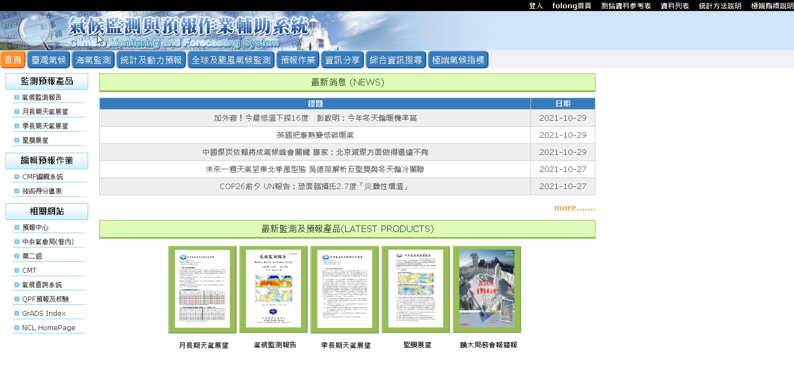
Forecasters directly skipped the main page full of unimportant
news abstracts and links.
Some are almost empty, and some are full of information
without proper arrangement.
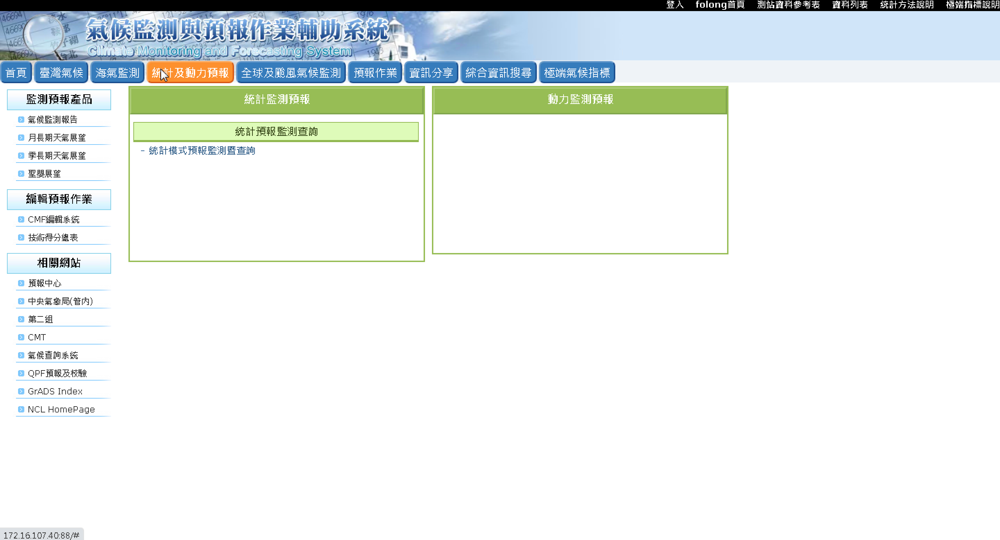
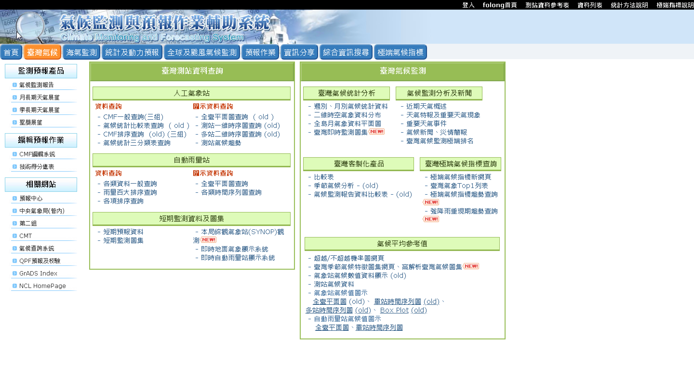
Although forecasters visit the information sharing page
the least, the repetitive content occupied nearly two
pages.
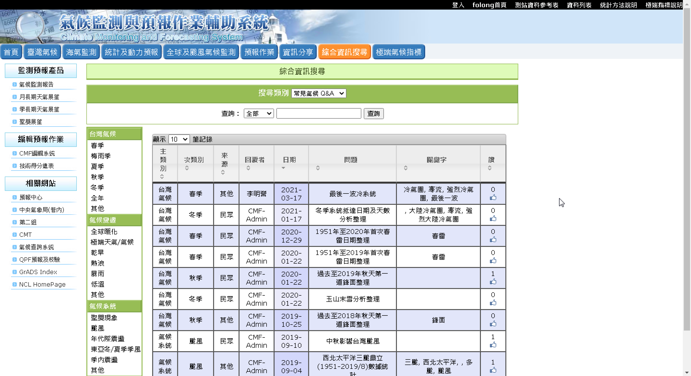
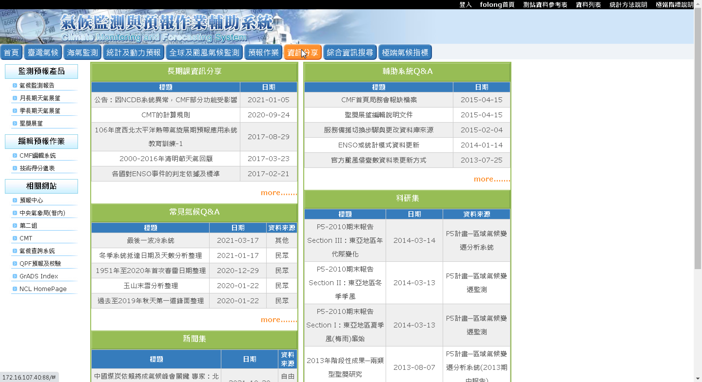
To check the extreme weather data, users have to scroll
through the whole page and switch three tabs separately,
which is troublesome.
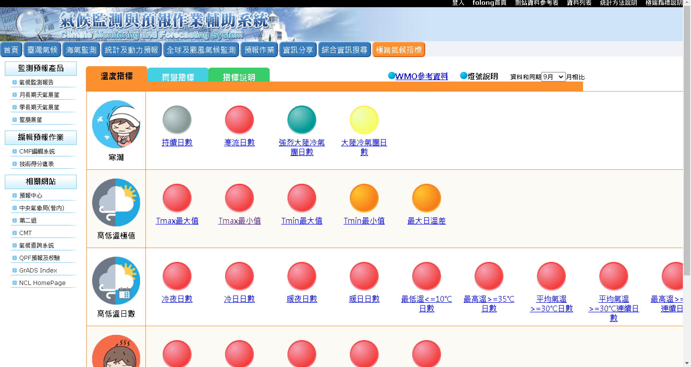
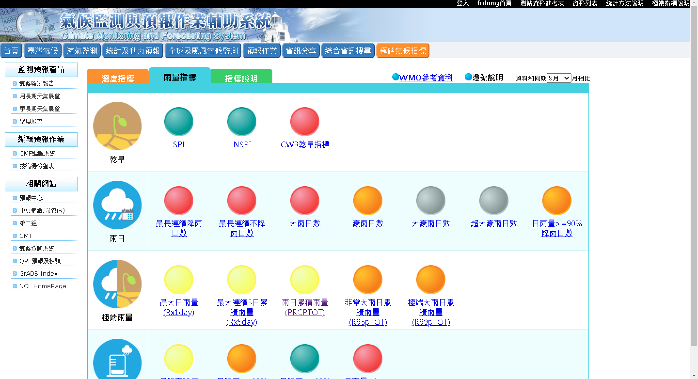
Information structure — reorganize the nav items for a
better navigation experience.
After a brief discussion, we deleted the useless pages,
relocated the system links, and moved the unimportant
links from the sidebar to the footer.
Create the most straightforward and understandable dashboard
ever for the CMF
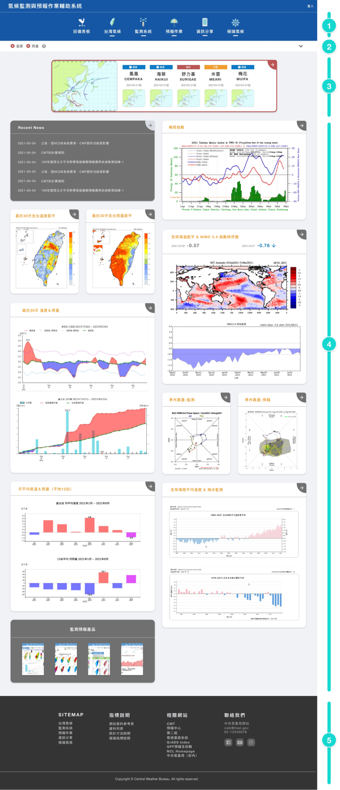
- Navigation
- Extreme weather indicators
-
Typhoon-warning section:
Due to the location, Taiwan had typhoons almost every
year, so I designed a typhoon-warning block to
illustrate the typhoon paths and details.
-
The most commonly-searched data:
CMF should fully present those data users need as
an informative dashboard, so I set the shortcuts for
severe weather to meet the potential users' needs.
-
Footer:
I put the least-used links, such as site map, indicator
description, contact us, and related websites, in the
footer to give space to the critical part.
System page – recategorize the tangled systems.
To eliminate and recategorize the old and suspended systems, I kept communicating between the client and developer to ensure correctness during the process.
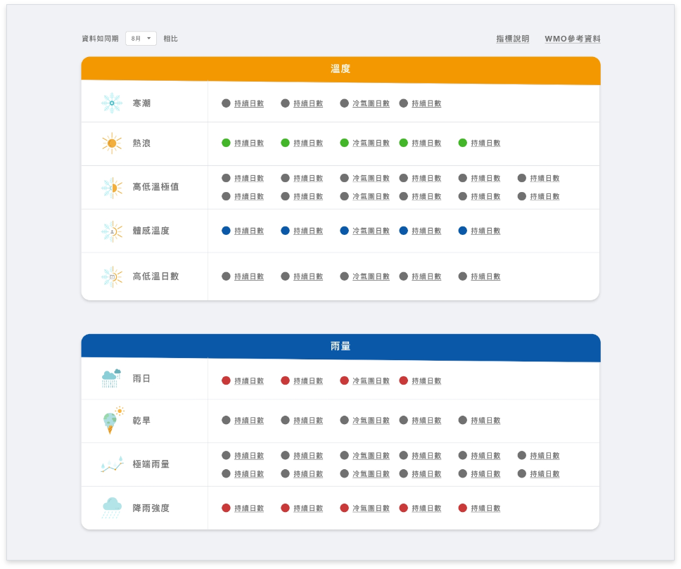
Extreme weather page – make it easy to access
Switching tabs and sliding up and down is upsetting to access the complete information, so I resized the table and icons to make them easier to view.
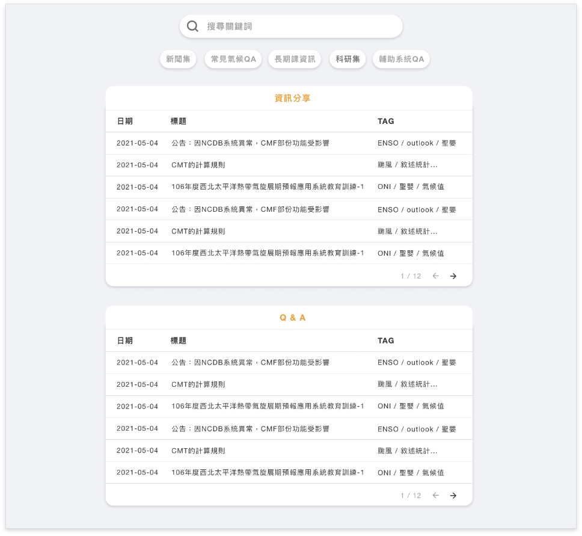
Information sharing page – tags design
Users never utilize information-sharing pages as they are confused by those repetitive functions, so I simplified and redesigned a new filtering function for a more satisfying searching experience.
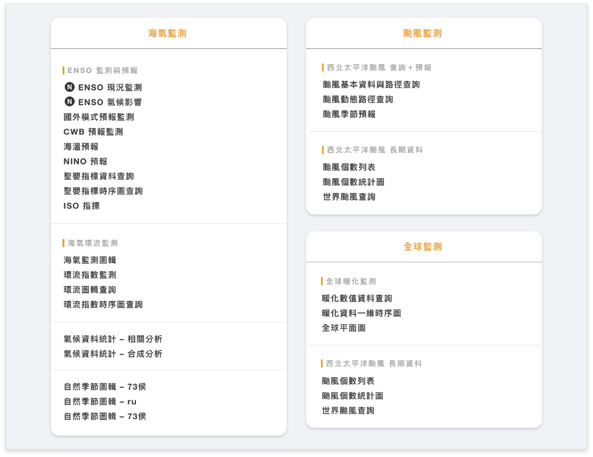
result
Forecasters' hearts go for this new portal after enduring the inconvenience of the outdated CMF for years. In my first UX design case, I was very appreciative to gain genuine trust from clients and my team leader. The most noteworthy is that I gained experience outlining users' needs and further illustrating concrete solutions. Not only did I cooperate with the ICDI (International Climate Development Institute) to develop a climate service portal later, but I also had the opportunity to design systems for the Civil Aeronautics Administration.